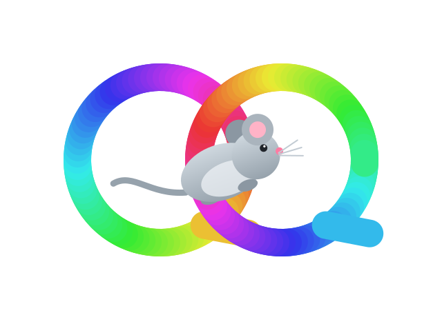

One keyboard & mouse.
All your computers.
QQMouse is a lightweight, native software KVM for Windows and macOS. Switch control between machines with a hotkey, share your clipboard, and drop files across — no hardware switch, no video streaming.
What it does
Native OS APIs only. No Boost, no Qt, no third-party networking or crypto — just Win32 and Cocoa.
Peer-mesh switching
No fixed server. Any paired machine can take input at any time; whichever one holds the mouse is the source, the rest are sinks.
Hotkey + tray switching
A global hotkey pops a picker of your machines. No edge-of-screen crawling — pick and go, or use the tray menu.
Secure pairing
Ephemeral ECDH plus a 6-digit code shown on both machines. No passwords, no certificates to manage.
Encrypted transport
AES-256-GCM over WebSocket-over-TLS. A separate channel carries file bytes so a big transfer never stalls the mouse.
Shared clipboard
Always-on text sync between machines, with loop-prevention and automatic exclusion of password-manager clipboard writes.
Native file transfer
Copy on one machine, paste on another. Bytes move only when you paste, and Explorer/Finder show their own progress UI.
Cross-OS keys
Modifiers remap by physical position — Win↔Option, Alt↔Cmd — so muscle memory carries between a PC and a Mac.
Priority failover
Order your machines and a single "primary" is elected automatically — it fails over down the list and fails back when a higher one returns.
Fail-safe by design
Local control always wins if a link drops. Heartbeat watchdogs, stuck-key release on every switch, and protocol-version checks.
How it works
Pair once, then switch whenever you like.
Install everywhere
Run the installer on each Windows and macOS machine you want to link. Same app, no separate "server" build.
Pair with a code
Machines find each other on your LAN. Confirm the matching 6-digit code on both, and they're bonded for good.
Switch & share
Hit the hotkey to hand your mouse and keyboard to another machine. Clipboard and files come along for the ride.